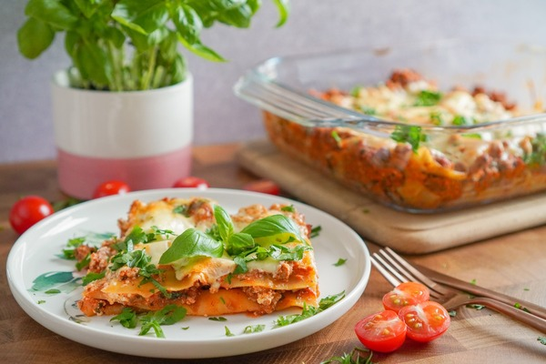

Lasagna

The UK's most famous lasagna recipe
This lasagna recipe has been handed down from generation to generation and has over the years become one of the UK's most loved lasagna recipes!
Ingredients
- 1 tbsp olive oil
- 1 onion, diced
- 1 carrot, diced
- 1 celery stalk, diced
- 2 garlic cloves, finely sliced
- 250g beef mince
- 250g pork mince
- 1 tbsp tomato purée
- 400g tin chopped tomatoes
- 200ml beef stock
- 200ml red wine
- 1 tsp Worcestershire sauce
- 9-12 lasagne sheets (depending on the size of your baking dish)
- 50g Parmesan, grate
- 150g pack mozzarella, shredded
For the white sauce
- 50g butter
- 50g plain flour
- 550ml semi-skimmed milk